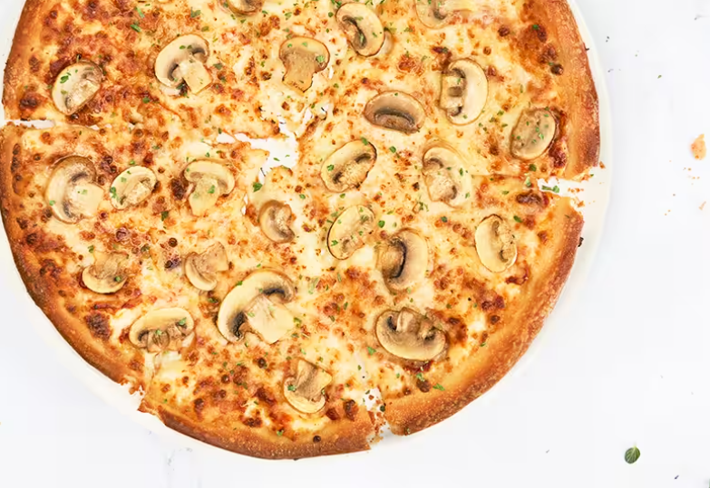
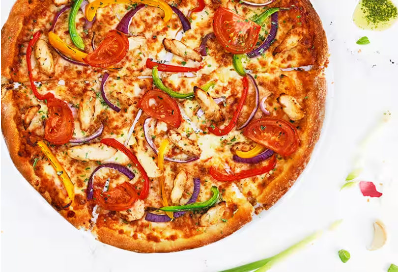
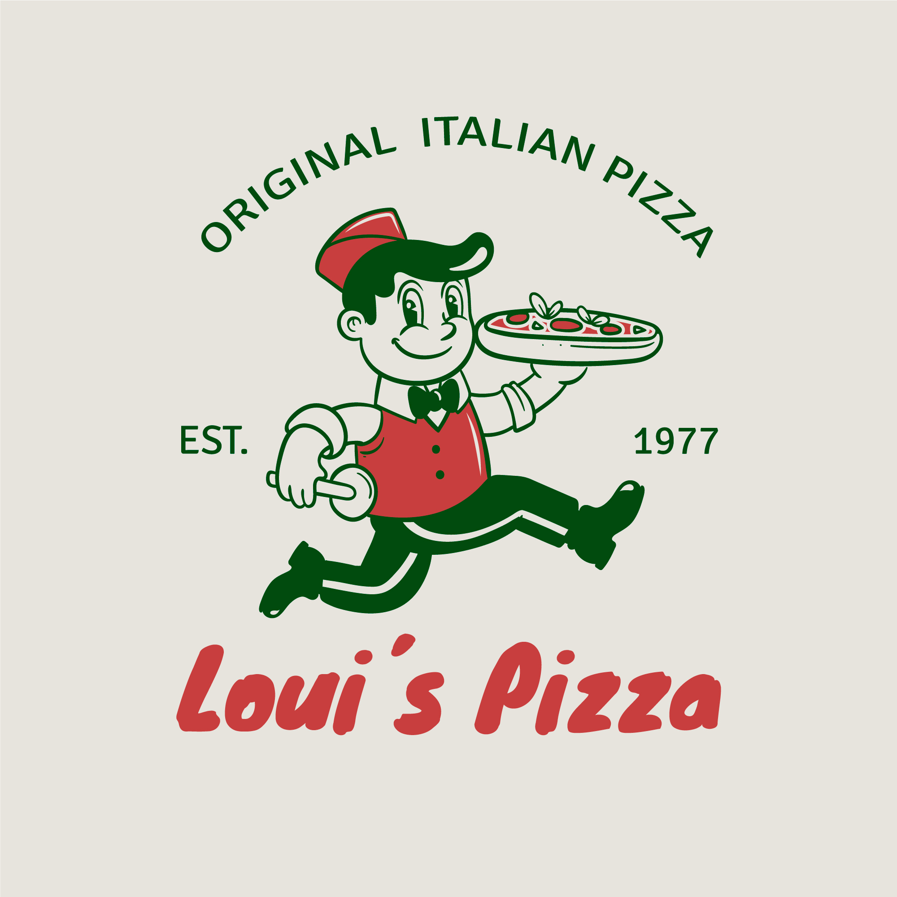

Loui's Pizza, opgericht in 1985 door de gepassioneerde pizzabakker Loui Martelli, begon als een bescheiden eettent in het hart van Little Italy. Loui, met zijn Italiaanse roots en geheime familierecept, wist al snel de harten van de lokale gemeenschap te veroveren. Zijn toewijding aan verse ingrediënten en authentieke smaken maakte Loui's Pizza een geliefde plek voor buurtbewoners en toeristen alike. Het kleine etablissement groeide uit tot een iconische pizzeria, waar de geur van versgebakken deeg en de vrolijke klanken van gezelligheid samenkomen. De legende van Loui's Pizza blijft gedijen, en de smaakvolle traditie wordt nu voortgezet door Loui's toegewijde kleinzoon, Tony, die de nalatenschap van zijn grootvader met trots voortzet.